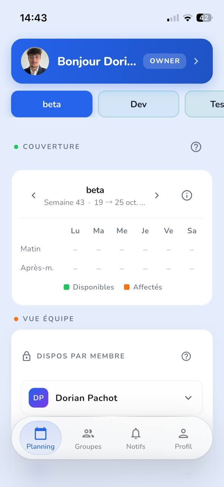
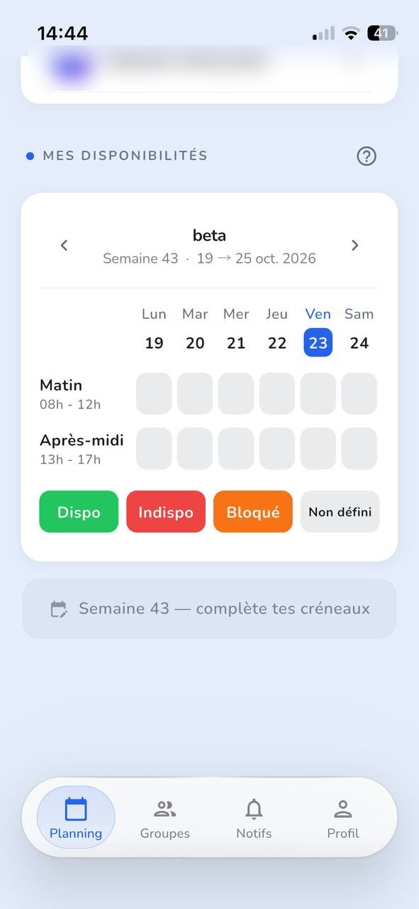
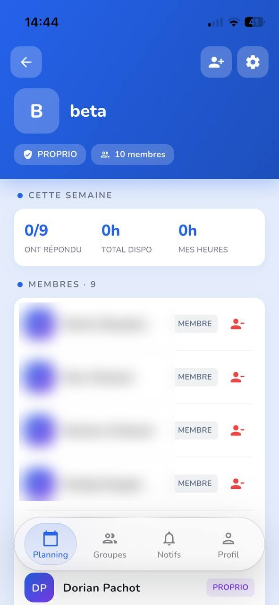
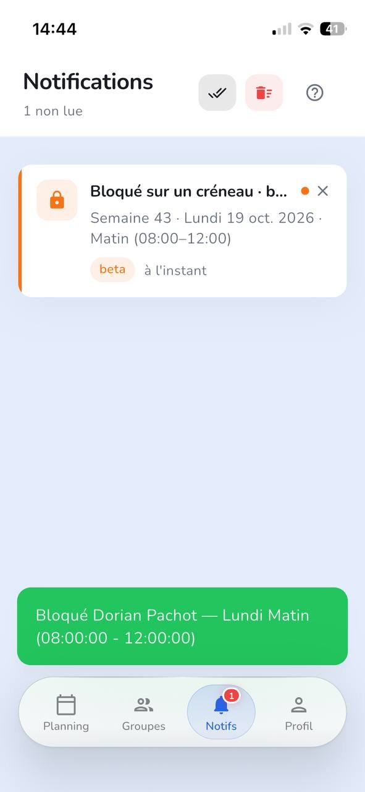

Projet en milieu professionnel, stage chez Suitime
SYNCRO
Application mobile de planification d'équipe, développée pour Suitime d'avril à août 2026 et publiée sur l'App Store et Google Play.




En bref
SYNCRO est une application mobile qui permet à une équipe de coordonner ses disponibilités de la semaine. Je l'ai développée pour Suitime, d'abord en parallèle de mes cours, puis à temps plein pendant mon stage. Je m'en suis occupé de bout en bout : l'application Flutter, l'API Next.js, la base de données, le serveur, le site vitrine et la publication sur les deux stores.
Le contexte et le besoin
Dans beaucoup de petites entreprises, les plannings changent chaque semaine et se gèrent avec un tableur partagé et des messages. Les informations se perdent, et il est difficile de savoir qui est disponible et quand.
Le besoin exprimé par Suitime : une application simple, utilisable sans formation, où chaque membre saisit ses disponibilités et où les responsables valident puis verrouillent la semaine.
Ce que j'ai réalisé
- Avril à juin : cahier des charges, maquettes, puis le cœur de l'application : comptes, groupes, saisie des disponibilités (matin, après-midi, autres plages), validation et verrouillage, notifications.
- Juillet (stage) : mise en production sur un serveur Linux, site vitrine appsyncro.fr, back-office pour l'équipe, migration du back-end en TypeScript et renforcement de la sécurité.
- Août (stage) : publication sur l'App Store et Google Play, notifications iOS, accessibilité et derniers correctifs.
- Invitations par QR code, suivi des heures, suppression de compte depuis l'application (exigée par Apple).
- Treize écrans maquettés pour cadrer une évolution importante du produit avec les responsables.
Les choix techniques
- Flutter : une seule base de code pour Android et iOS.
- Next.js en TypeScript pour l'API REST : 14 modules partagés et 53 routes migrés de JavaScript vers TypeScript, pour détecter les erreurs avant la mise en ligne plutôt qu'en production.
- MySQL / MariaDB, avec des index et des déclencheurs pour garder les données cohérentes.
- Authentification par jetons : un jeton d'accès de 15 minutes et un jeton de renouvellement de 7 jours.
- Nginx, PM2 et HTTPS sur le serveur, avec un déploiement automatisé basé sur Git.
- Notifications push avec Firebase pour Android et APNs pour iOS.
Les difficultés et comment je les ai résolues
- Refus de l'App Store : les testeurs d'Apple ne pouvaient pas se connecter. La connexion était en réalité cassée en production depuis cinq jours, à cause d'anciens fichiers restés sur le serveur. J'ai corrigé, puis modifié le script de déploiement pour supprimer les fichiers obsolètes et lancer un test de connexion à chaque mise en ligne.
- Notifications iPhone qui n'avaient jamais fonctionné, sans aucun message d'erreur. J'ai comparé point par point avec une autre application de l'entreprise qui fonctionnait, et trouvé trois écarts.
- Blocage de créneaux : un membre pouvait être bloqué deux fois sur le même créneau. La protection existait, mais elle était fausse pour les horaires qui passent minuit. J'ai écrit une nouvelle méthode, vérifiée sur les cent combinaisons possibles.
- Permissions : en relisant les routes sensibles une par une, j'ai trouvé et corrigé un défaut de cloisonnement entre groupes.
Le résultat
SYNCRO est disponible sur l'App Store et Google Play, et son site appsyncro.fr est en ligne. Le projet représente 84 commits sur cinq mois. Mon responsable de stage m'a remis une lettre de recommandation.
Ce que j'en retiens
- Une protection présente dans le code doit être vérifiée sur les cas limites.
- Après une correction, il faut empêcher que le problème revienne : c'est le rôle des tests automatiques.
- Comparer avec ce qui fonctionne déjà est souvent plus sûr que d'inventer.
- Quand un sujet relève d'une décision produit, je le signale au lieu de trancher seul.
Compétences mobilisées
- Concevoir et développer une application mobile et son API.
- Concevoir et faire évoluer une base de données.
- Mettre en production et maintenir un service sur un serveur Linux.
- Sécuriser une application : authentification, permissions, validation des données.
- Travailler en mode projet avec des responsables : maquettes, cadrage, compte rendu.
- Diagnostiquer et corriger des incidents en production.
Une question sur ce projet ?
Je serai ravi d'en parler plus en détail lors d'un échange.